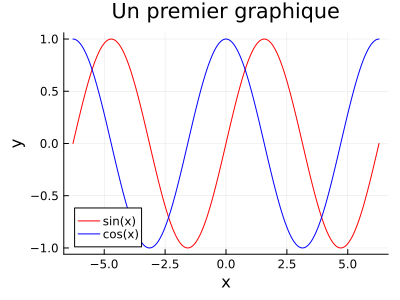

Affichage de graphiques
Afin d'afficher des graphiques avec Julia, il faut utiliser le package Plots, en employant la commande using Plots. Les attributs spécifiant les propriétés des courbes et des graphiques doivent être décrites lors de la création de ces mêmes courbes, comparativement à Matlab. L'exemple suivant permet de créer une courbe rouge représentant la fonction sin et une courbe bleue représentant la fonction cos.
julia> using Plotsjulia> x = LinRange(-2*pi,2*pi,250); y1 = sin.(x); y2 = cos.(x);julia> plot(x,y1,label="sin(x)",color="red")Plot{Plots.GRBackend() n=1}julia> plot!(x,y2,label="cos(x)",color="blue",xlabel="x",ylabel="y",title="Un premier graphique")Plot{Plots.GRBackend() n=2}
